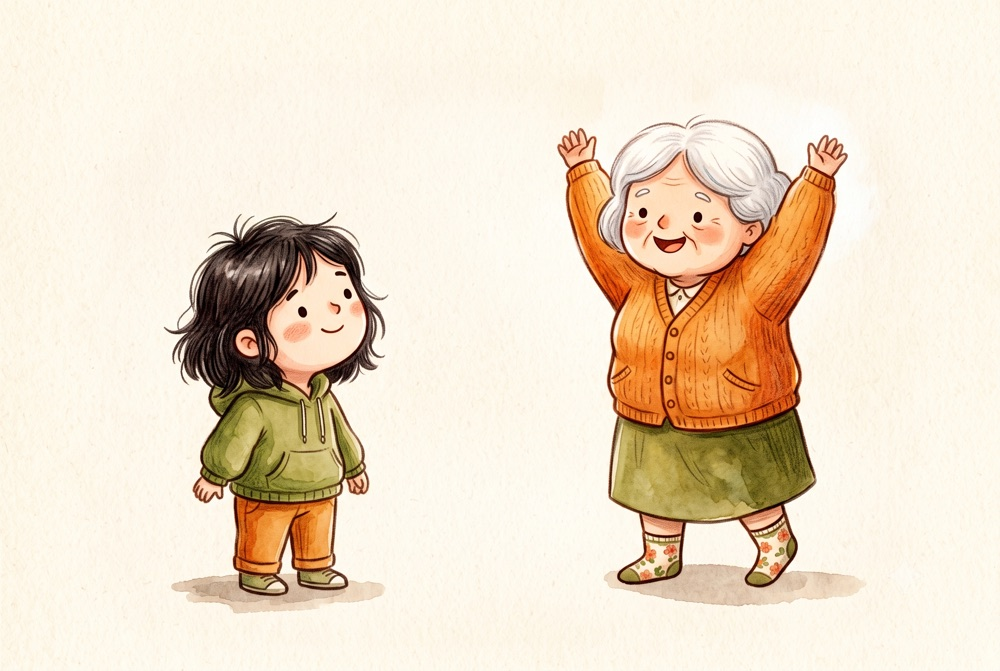

Again —— 重來，而不是檢討

即興劇的老師喊得最多的一個字，不是「好」，也不是「不對」。
是 Again。
再一次。
檢討是一種離開
假設你在一個場景裡卡住了 —— 接不上對方的話，或者做了一個明顯不合理的反應。接下來幾秒鐘，你的腦袋會很忙：
剛剛那句話很爛。 我應該說另一句才對。 大家一定看得出來我不會演。
這些念頭都很合理。問題是，當你在想這些的時候，你已經不在場上了。
場景還在繼續，對方還在給你東西，但你正在後台檢討剛才那一顆球。所以你會錯過下一顆。然後你會有更多東西可以檢討。
這個迴圈可以跑一整堂課。
治療室裡的同一個迴圈
你做了一個詮釋，個案的反應是沉默，接著轉開視線。
你立刻知道那個詮釋落空了。然後你的腦袋開始跑：
太快了，還不是時候。 他現在覺得我不懂他。 我剛剛是不是把他推遠了？
同樣的問題：當你在評估自己的時候，你沒有在看他。
而他此刻正在發生的事 —— 那個沉默是防衛、是消化、還是受傷 —— 你其實可以直接觀察到。但你的注意力被自己占滿了。
諷刺的地方在這裡：你之所以會自我檢討，是因為你在乎他。但檢討本身讓你離開了他。
Again 的意思
「再一次」不是叫你忘記剛才發生的事，也不是要你假裝沒事。
它是一個方向：注意力從裡面轉回外面，從剛才轉回現在。
在舞台上，這代表你不去修剛剛那句台詞，而是接住對方現在給你的東西。在治療室裡，這代表你不去修剛剛那個詮釋，而是看見他現在的沉默。
具體到可以做的程度，大概是這樣：
- 承認落空了（一秒鐘，在心裡）
- 把眼睛放回他身上
- 描述你現在看到的：「你安靜下來了。」
第三步幾乎總是比任何補救都有用。因為它把場景交還給他，而不是繼續在你自己的判斷裡打轉。
為什麼這件事需要練
因為自我監控是一個很深的習慣，尤其對受過訓練的人。
我們被教導要覺察自己的反移情、要注意自己的用詞、要反思每一個介入。這些都是對的。但它們全部指向內部，而治療的材料在兩個人之間。
如果沒有一個相反方向的練習，內部監控會不斷擴張，最後你會變成一個在會談中不斷評分的人。個案感覺得到那個距離，即使他說不出那是什麼。
即興劇的訓練之所以有用，是因為它強迫你在還沒想清楚的時候就得回應。你沒有時間檢討。久了，你會發現「不檢討也不會死」，而且場景通常還變得更好。
一個可以自己做的版本
不需要上台。下一次會談裡，當你發現自己開始評估剛才那句話的時候：
在心裡說一次 Again，然後把注意力放回對方的臉。
就這樣。不用做別的。
你會發現自己一次會談裡要說很多次。那個次數本身，就是你平常有多少注意力沒有留在現場的答案。
我第一次真正懂這個字，是在加拿大的一場工作坊上。輪到我，腦袋一片空白，一個字都說不出來。我以為自己完了。
然後 Keith Johnstone 舉起雙手，朝我大喊 Again!
那不是安慰，也不是責備。是一個指令，而且是最簡單的那一種 —— 回來，再一次。
那一聲接住了我。整件事只花了兩秒鐘，但它改變了我後來怎麼看待自己犯的每一個錯。
完整的故事寫在〈關於我〉。